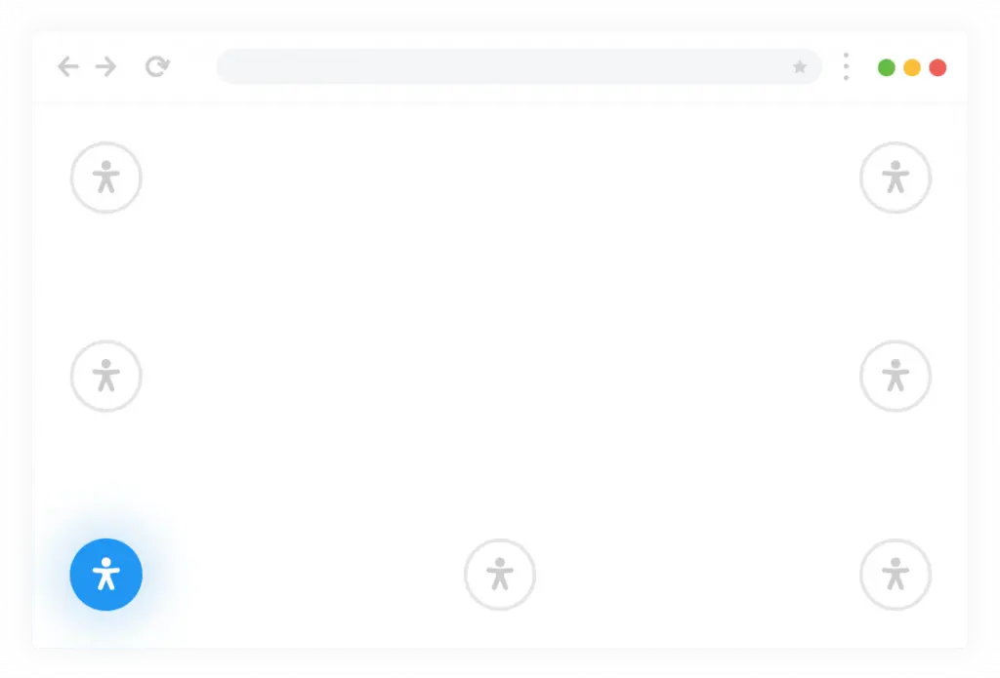
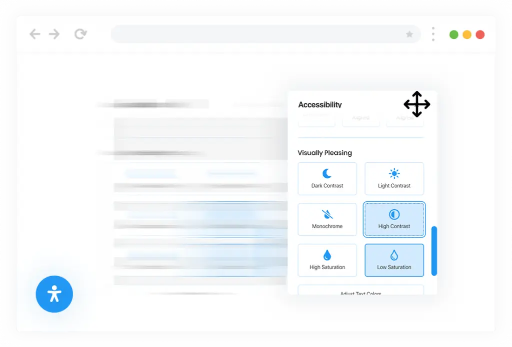
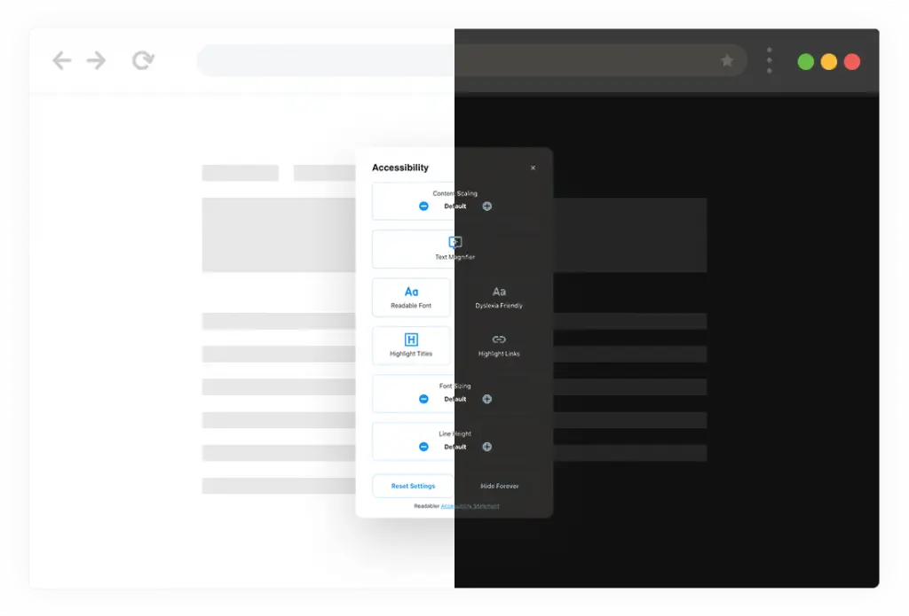
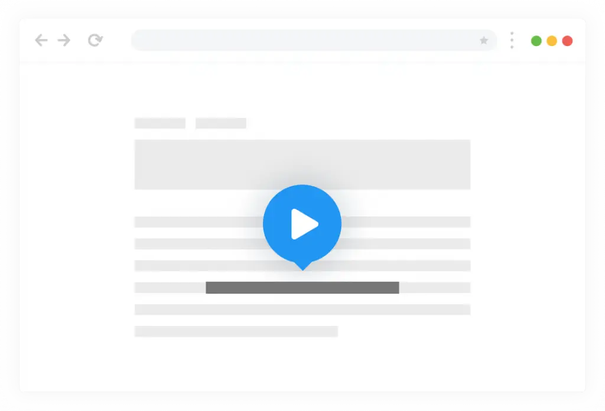
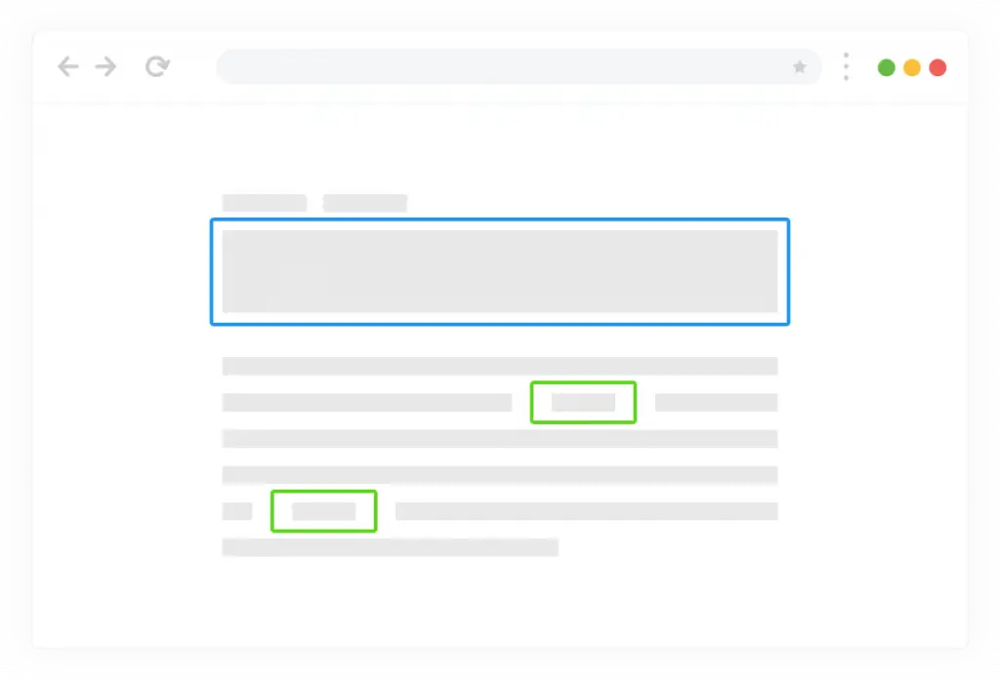
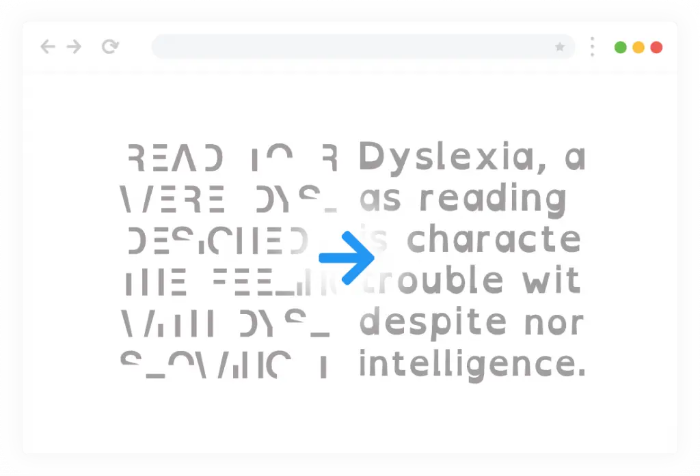
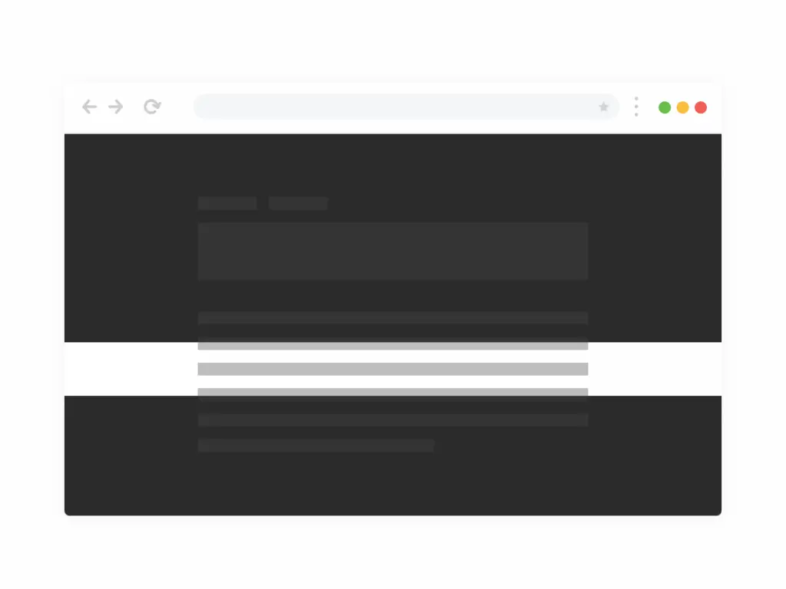
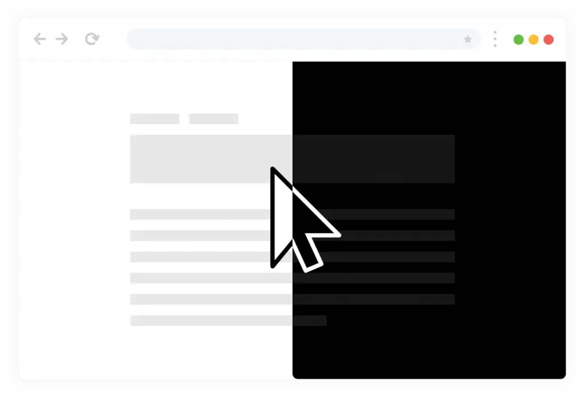
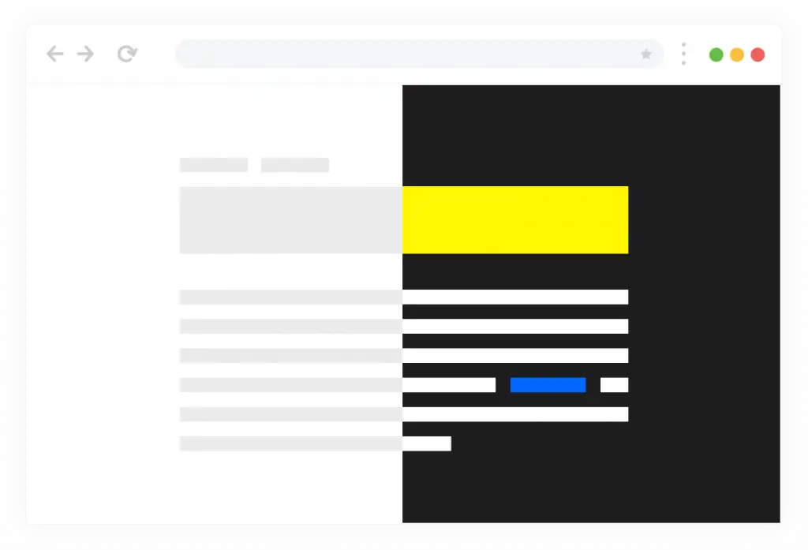
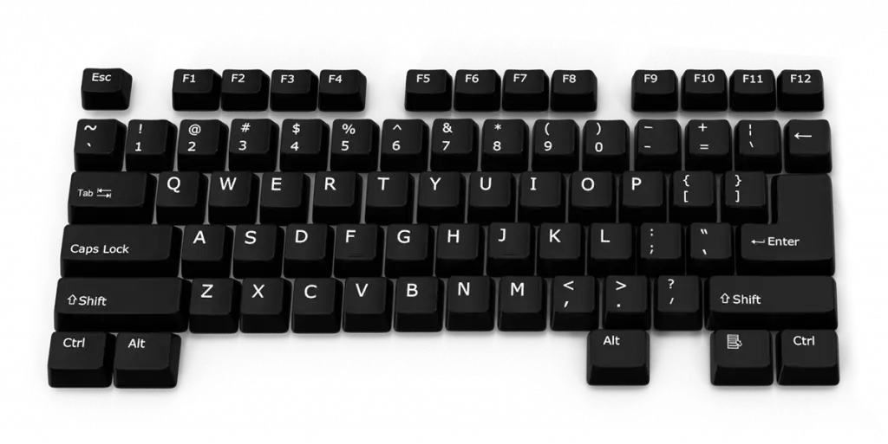

Accessibility
is the Key
Readabler is a JavaScript
accessibility solution that
expands the
boundaries of
information accessibility for
people with special
portability.
Flexible accessible
settings set
Choose the unique set of
controls for your site..
Improve contrast &
text readability
Full control over the content
displayed on the page.
Convert text to
speech
Highlight and listen to
anything impossible to read
1 billion people have a vision impairment
According to the World Health Organization research
These 2 billion people include those with moderate or
severe distance vision
impairment or blindness due to
unaddressed refractive error (123.7 million), cataract
(65.2
million), glaucoma (6.9 million), corneal opacities
(4.2 million), diabetic retinopathy (3 million),
and
trachoma (2 million), as well as near vision impairment
caused by unaddressed presbyopia (826
million).
2 000 000 000
Visual Impairment Peoples

7 Positions for placing the accessibility button
The accessibility button will fit perfectly into any website design.
There are 7
positions for button placement in the plugin
settings. Animation and the ability to flexibly customize
icon
and button styles will allow you to achieve the perfect match
between the button and your
site.
Draggablele accessibility settings window
JavaScript accessibility solution will make publications on your
website accessible to people with
perception problems,
cognitive impairments, hearing or vision impairments.

5
Includes Five Accessibility Profiles
Using the plugin settings, it is possible to choose a flexible set of settings and options
that will be
used on your site. Simultaneously, the plugin has 5 pre-installed profiles that
will increase the
accessibility of your site for people with Epilepsy, Visual Impaired,
Cognitive Disability,
ADHC, and also partially or completely blind.

Day & Night color scheme
based on browser settings
The plugin provides Day(Light) and Night(Dark) color theme
profiles for the assessable window. Color
themes switch
automatically depending on the browser settings or the user’s
operating system.
Highlight and listen by WebSpeech API
The Readabler uses the latest technology of machine learning
and artificial intelligence to play a
high-quality human voice.

More than 60 voices & languages and variants
Website Accessibility JS script converts text
into human-like speech in more than 60
voices &
languages and variants.
Excellent Readability Experience
One of the main features of the plugin is to improve the readability of text
content. To solve this
problem, the plugin has settings for scaling the entire
page or only some types of test, for example, a
heading or plain text. Also
important for readability are the settings for increasing line and letter
spacing, changing all texts’ alignment.

Highlighting titles, links, texts and more
An important part of any site is interaction with the page, for
which the plugin provides modes for
highlighting texts and
titles and a magnifier that enlarges the text when you hover the
mouse
cursor over it.
Online Dictionary by Wikipedia
For people with memory difficulties or forgetting to define things and concepts, we
added Wikipedia. To
access the huge knowledge base of Wikipedia, you just need to
open the accessibility control panel and
write a word to clarify the meaning in the
search field. In a few seconds, Wikipedia will show
everything it knows about this thing or concept.

Font management and
Dyslexia friendly font
For people who find it difficult to read text written in calligraphic or sans fonts, the plugin provides a mode for changing the font on the entire site to readable or to a font for people who have Dyslexia.
Disable anything
that might be annoying or distracting
One of the important settings in this group allows you to turn off anything that can flicker or blink,
such as videos, CSS animations, and animated GIF images.

Attention deficit hyperactivity disorder (ADHD)
A large group of settings to improve the accessibility for people with orientation disorders. The Readabler automatically analyzes the page at load time and creates a list of all links on the page so that several links do not go unnoticed or inaccessible for any reason.
Black or White Large Cursors
Large cursors in black and white are available in the plugin to
facilitate mouse navigation. Several
modes for improved
selection of objects on hover and focus and mode for
controlling the page from
the keyboard.

Mute website sound
Accessibility solutions is built on JavaScript, making it fully compatible with all existing Content
Management Systems. It also allows to work quickly in any modern browser, both on a mobile device,
laptop,
and desktop computer.

Controlling visual pleasing,
and page contrast
Change in the color of fonts and backgrounds makes available
text that in the usual mode could not be
readable. In addition to
the usual brightness, saturation, and contrast control modes,
the plugin
will make the site monochrome in black-white mode.
Virtual keyboard and
additional keyboard
navigation
For people who cannot use the keyboard to type the test text,
we have added a full virtual keyboard to
the plugin. It is an on-
screen keyboard with which you can enter text using
manipulators such as
a mouse or touchpad.

Visual impairments adjustment settings
Visual pleasing adjustments settings
Includes settings group to improve readability
Settings to improve focus of attention
Scaling and highlighting text content by type
Draggable accessibility window
Appearance animation of the accessibility button
Flexible style settings of the button
7 Positions for placing the accessibility button
Day and Night color schemes
Compatible with all popular CMS
Compatible with all Modern Browsers
Perfect for RTL direction
Native Valid JavaScript, without jQuery
Beautiful modern User Interface
Lightweight and Fast
Totally Seo Friendly
Installation Guide & Detailed User Manual
Six months Included Support for CodeCanyon buyers
WCAG 2 Level AAA Compliant
Customer Support
Service & Online
Documentation
work immediately after connection and initialization.